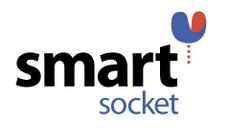
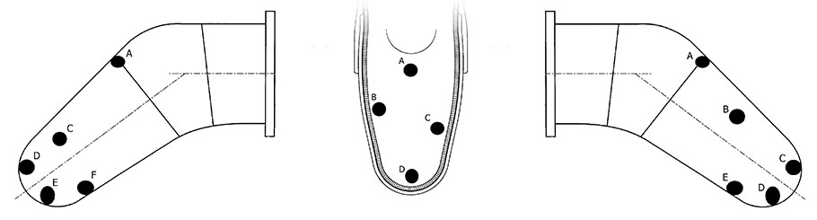

SmartSocket measures pressure day-to-day at the socket limb interface and sends information wirelessly via Bluetooth to the user and the user’s physician. This will help prevent ulcerations and other discomfort at the socket interface by gathering information to understand pressure thresholds at the socket-limb interface and create a dynamically changing prosthetic socket.
Purpose
Lower limb amputees are prone to ulcerations and general discomfort. The volume and topography of the limb change as new scar tissue is formed, and current prosthetic technologies cannot change dynamically along with the residual limb.
To address this clinical need, pressure will be measured at the socket-limb interface, and these pressures will be used to inform the patient, over time, of pressures experienced that could lead to ulcerations.
The goal of the developed design is to provide a research tool for physicians to quantify experienced pressures and develop a prosthetic socket that changes dynamically with the patient’s residual limb, thereby preventing ulcerations and discomfort.
This will allow patients an increase in mobility and decrease the amount of doctor visits the patient must undergo. In the long term, this will decrease healthcare costs and allow patients to be more actively involved in their own care.
Prototype
Six sensors were placed on the inside of the prosthetic socket to get an average amount of pressure distributed along the socket-limb interface. The sensor arrangement can be seen in the images below. Each sensor measures pressures experienced at a sampling rate = 1 second. The sensors were the covered with Duratec Grey Surface Primer to protect the sensors from wear-and-tear. The wires are then fed through a small hole drilled near the base of the prosthesis. There is a housing unit which holds the breadboard, Arduino, and battery.

Final Design
For the final design, BioMEMS sensors will completely cover the inside of the prosthetic socket. BioMEMS are a new and innovative technology and these pressure sensors are completely wireless. Each sensor transmits a signal to the subsequent antenna. The sensors will then be covered by a thin layer of primer (the same primer used in the prototype) to create an even surface and protect the sensors from every day wear-and-tear. These antennas will also be an array but they will be placed on the outside of the prosthesis. These antennas are connected directly to a power source and AC to DC converter. These measurements will be sent via Bluetooth similarly to the prototype directly to the patient and physician’s computer and smartphone.


About Us
We are a team of engineers working with Dr. Justin Kane to develop a wearable pressure sensing system for the inside of lower limb prosthetic sockets.